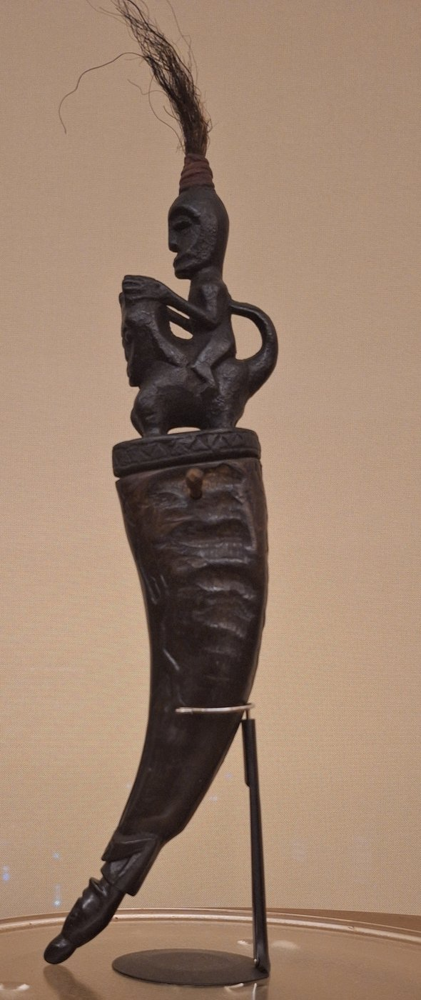
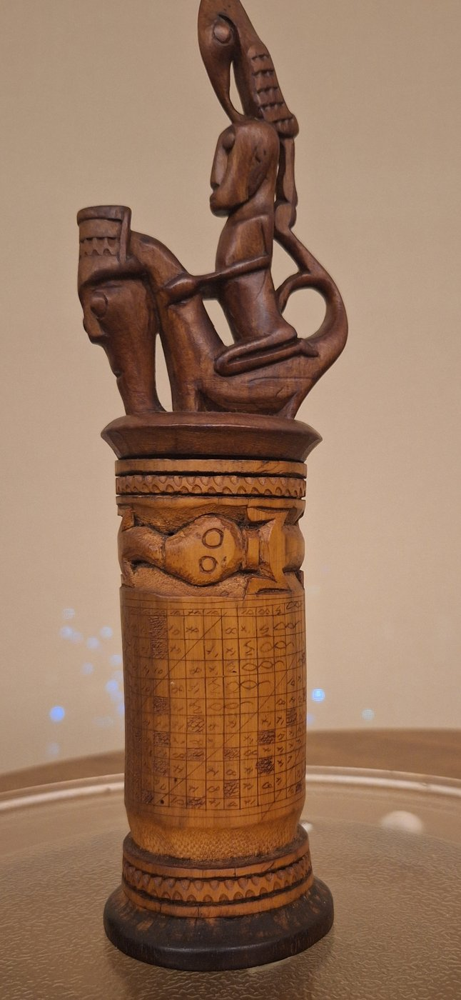
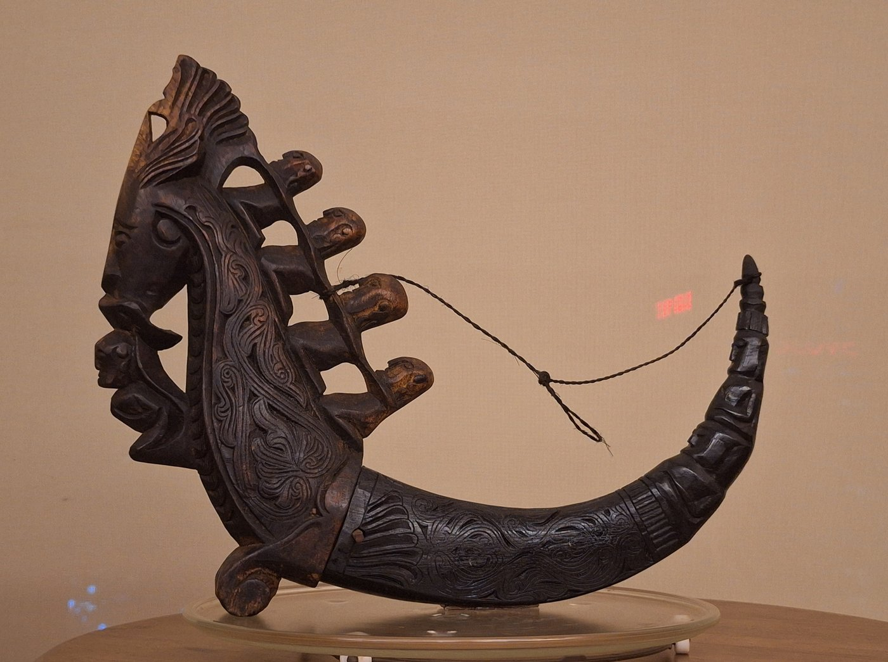

Curatorial note. This essay reads the collection’s Batak medicine containers against the material-culture scholarship that has documented the type — above all Achim Sibeth’s Batak Sculpture, and the catalogue records of the Metropolitan Museum of Art, the Bowers Museum and Yale University Art Gallery — and against the study of Southeast Asian animist ontologies and Mircea Eliade’s history of religions. The Toba Batak have been largely Christian since the late nineteenth century, and the world of the datu is in many places a remembered rather than a practised one; where that is so, this essay follows the published record and marks interpretation as interpretation. It is presented bilingually; use the language selector above for the Romanian edition.Notă curatorială. Acest eseu citește recipientele-medicament batak ale colecției în raport cu studiile de cultură materială care au documentat tipul — mai ales Batak Sculpture de Achim Sibeth și fișele de catalog ale Metropolitan Museum of Art, Bowers Museum și Yale University Art Gallery — și în raport cu studiul ontologiilor animiste din Asia de Sud-Est și cu istoria religiilor a lui Mircea Eliade. Toba batak sunt, în mare parte, creștini din a doua jumătate a secolului al XIX-lea, iar lumea datu-lui este în multe locuri una amintită, nu practicată; acolo unde este așa, eseul urmează consemnarea publicată și marchează interpretarea ca interpretare. Este prezentat bilingv; folosiți selectorul de limbă de mai sus pentru ediția în română.
Among the Toba Batak of Sumatra, the person who made and used an object like this was the datu — not a “witch-doctor” but a scholar-priest: healer, diviner, calendar-keeper, and reader of the pustaha, the folding bark-and-wood books written in Batak script in which ritual knowledge was preserved. Political power among the Batak lay with chiefs and elders; spiritual power lay with the datu, who could communicate with the dead and compound the potent substances — pupuk, pagar — on which protection and healing depended. Those substances were dangerous, and could be handled only under strict rule: to store them in the wrong vessel was to court disaster. The naga morsarang is the vessel made to hold them, and to follow it from its plainest to its most elaborate form is to watch a cosmology assemble itself in the hand.
La poporul Toba Batak din Sumatra, cel care făcea și folosea un astfel de obiect era datu — nu un „vraci”, ci un preot-cărturar: vindecător, ghicitor, păstrător al calendarului și cititor al pustaha, cărțile pliate din scoarță și lemn, scrise în alfabet batak, în care se păstra cunoașterea rituală. Puterea politică, la batak, era a căpeteniilor și a bătrânilor; puterea spirituală era a datu-lui, care putea vorbi cu morții și prepara substanțele potente — pupuk, pagar — de care depindeau ocrotirea și tămăduirea. Acele substanțe erau primejdioase și puteau fi mânuite doar sub reguli stricte: a le păstra în vasul nepotrivit însemna a chema nenorocirea. Naga morsarang este vasul făcut să le țină, iar a-l urmări de la forma cea mai simplă la cea mai elaborată înseamnă a privi o cosmologie cum se alcătuiește în mână.
I. The primordial vesselI. Vasul primordial
At its most elemental, the buffalo horn is already charged. Hollow, curved, organic, it is a natural conduit — a space in which the datu’s compounded medicine is held. Recent scholarship on Southeast Asian animism gives this intuition a firmer footing than Eliade alone can: in the region’s ontologies, cosmic power or vital force flows through the world and coalesces in certain materials, so that a container is never a neutral holder but a place where potency gathers. Often the earth-deity Boraspati ni Tano, in the form of a lizard, is carved into the hollow of the horn itself — the same motif the datu drew in his divination books — so that the interior of the vessel is already inhabited before anything is placed inside it. The horn is the first threshold: not a jar, but a node in a living cosmos.
La nivelul cel mai elementar, cornul de bivol este deja încărcat. Scobit, curbat, organic, el este un conduct firesc — un spațiu în care se ține medicina compusă de datu. Studiile recente despre animismul din Asia de Sud-Est dau acestei intuiții un temei mai ferm decât o poate face Eliade singur: în ontologiile regiunii, puterea cosmică ori forța vitală curge prin lume și se adună în anumite materii, astfel încât un recipient nu este niciodată un simplu suport, ci un loc unde potența se strânge. Adesea, zeitatea-pământ Boraspati ni Tano, sub chip de șopârlă, este cioplită chiar în scobitura cornului — același motiv pe care datu îl desena în cărțile sale de divinație — astfel încât interiorul vasului este locuit înainte ca ceva să fie pus înăuntru. Cornul este pragul dintâi: nu un borcan, ci un nod într-un cosmos viu.
II. The inhabited form — the guardian at the mouthII. Forma locuită — gardianul de la gură
The wide end of the horn is plugged with a carved wooden stopper, and the stopper is never neutral: it is carved as the singa, the composite underworld guardian that Toba iconography builds from the features of water buffalo, horse and serpent — a naga-like being of the lower world, with a gaping mouth and horned head. Once the singa keeps the mouth of the vessel, power must be approached, not simply opened.
Capătul larg al cornului este astupat cu un dop de lemn sculptat, iar dopul nu este niciodată neutru: este cioplit ca singa, gardianul-compozit al lumii de jos pe care iconografia toba îl alcătuiește din trăsăturile bivolului de apă, ale calului și ale șarpelui — o ființă asemenea unui naga a tărâmului de dedesubt, cu gura căscată și capul încornorat. Odată ce singa păzește gura vasului, puterea trebuie abordată, nu doar deschisă.

III. The line of transmission — and the datu’s literacyIII. Linia transmiterii — și cărturăria datu-lui
In more complex pieces the figures multiply, and their meaning sharpens. The Metropolitan Museum reads a near-identical stopper — a singa carrying four figures on its back — as the succession of datu, the ritual masters who preceded the vessel’s owner. The stack of riders is therefore not decoration but a genealogy made into a lid: the power inside the horn is revealed as inherited, transmitted down a chain of specialists, never merely personal. This is the same logic that governs the great datu staffs, the tunggal panaluan, whose columns of carved figures are visible lines of descent and transmitted authority.
În piesele mai complexe figurile se înmulțesc, iar sensul lor se ascute. Metropolitan Museum citește un dop aproape identic — o singa purtând patru figuri în spate — drept succesiunea de datu, maeștrii rituali care l-au precedat pe posesorul vasului. Stiva de călăreți nu este, așadar, ornament, ci o genealogie prefăcută în capac: puterea dinăuntrul cornului se dezvăluie ca moștenită, transmisă de-a lungul unui lanț de specialiști, niciodată doar personală. Este aceeași logică ce cârmuiește marile toiege ale datu-lui, tunggal panaluan, ale căror coloane de figuri cioplite sunt linii vizibile de descendență și de autoritate transmisă.
The collection holds an object in which this transmission is doubled — where the vessel carries not only the ancestral chain but the knowledge the chain transmitted.
Colecția deține un obiect în care această transmitere este dublată — unde vasul poartă nu doar lanțul ancestral, ci și cunoașterea pe care lanțul a transmis-o.

IV. The complete cosmogramIV. Cosmograma completă
At its most elaborate the vessel integrates every element into one system. The horn body is sheathed in the fine curvilinear foliate scrollwork that Toba carving uses deliberately — repeated on the singa’s brow — to signal the power of the vessel and the efficacy of its contents. The stopper becomes an openwork architecture of beings, and the pointed end of the horn is itself often carved as a seated figure, so that the object is inhabited from tip to mouth.
La forma sa cea mai elaborată, vasul integrează fiecare element într-un singur sistem. Trupul cornului este învelit în fina volută vegetală curbilinie pe care cioplitul toba o folosește anume — reluată pe fruntea singei — pentru a semnala puterea vasului și eficacitatea conținutului său. Dopul devine o arhitectură ajurată de ființe, iar capătul ascuțit al cornului este el însuși adesea cioplit ca o figură șezândă, astfel încât obiectul este locuit din vârf până la gură.

Eliade wrote that the specialist’s instruments are not symbols but operative realities — devices that make the invisible accessible. The naga morsarang is exactly that. But we can be more precise than Eliade allowed: it is not a generic “sacred object” but the specific technology of a specific office, the datu’s, within a specific three-tiered cosmos — upper world, middle world, and the underworld of the singa and the naga. From empty horn, to inhabited form, to ancestral chain, to complete cosmogram — the vessel grows, and with it grows the number of worlds it joins.
Eliade scria că uneltele specialistului nu sunt simboluri, ci realități operative — dispozitive care fac accesibilul invizibil. Naga morsarang este tocmai aceasta. Dar putem fi mai preciși decât a îngăduit Eliade: nu este un „obiect sacru” generic, ci tehnologia anume a unei slujbe anume, cea a datu-lui, într-un cosmos anume, în trei trepte — lumea de sus, lumea de mijloc și lumea de jos a singei și a naga-i. De la cornul gol, la forma locuită, la lanțul ancestral, la cosmograma completă — vasul crește, iar odată cu el crește numărul lumilor pe care le unește.
V. A living, transformed traditionV. O tradiție vie, transformată
It would be false to file the naga morsarang under “the vanished pagan Batak.” The Toba are today overwhelmingly Christian, and the datu’s full apparatus survives more in museums, memory and revival than in daily practice — a bronze Si Raja Batak, the legendary first ancestor, stands above Lake Toba with a naga morsarang at his shoulder, a national monument to a role now largely historical. Yet the underlying ontology — that power gathers in matter, that ancestors remain agents, that objects act — did not vanish with conversion; among the neighbouring Karo Batak, spirit mediumship persisted vividly into the colonial and postcolonial present, as Mary Steedly has shown. The vessel in the vitrine is therefore not a closed chapter but a still frame from a longer film: an object whose logic outlived the religion that produced it.
Ar fi fals să așezăm naga morsarang la rubrica „batakul păgân dispărut”. Toba sunt astăzi, în covârșitoare majoritate, creștini, iar întregul aparat al datu-lui supraviețuiește mai mult în muzee, în memorie și în renaștere culturală decât în practica zilnică — un Si Raja Batak de bronz, strămoșul dintâi din legendă, stă deasupra Lacului Toba cu un naga morsarang pe umăr, monument național pentru un rol azi în mare parte istoric. Și totuși ontologia de dedesubt — că puterea se adună în materie, că strămoșii rămân agenți, că obiectele lucrează — nu a pierit odată cu convertirea; la vecinii Karo Batak, mediumitatea cu spiritele a dăinuit viu până în prezentul colonial și postcolonial, așa cum a arătat Mary Steedly. Vasul din vitrină nu este, așadar, un capitol încheiat, ci un cadru dintr-un film mai lung: un obiect a cărui logică a supraviețuit religiei care l-a produs.
Notes & sourcesNote și surse
- The definitive material-culture authority. Achim Sibeth (with Bruce W. Carpenter), Batak Sculpture (Editions Didier Millet, 2007), and Sibeth, The Batak: Peoples of the Island of Sumatra (Thames & Hudson, 1991) — the standard references on the datu, the magic staffs (tunggal panaluan), the singa, ijuk fibres, pupuk, and the medicine horn.Autoritatea de referință în cultura materială. Achim Sibeth (cu Bruce W. Carpenter), Batak Sculpture (Editions Didier Millet, 2007) și Sibeth, The Batak: Peoples of the Island of Sumatra (Thames & Hudson, 1991) — referințele standard despre datu, toiegele magice (tunggal panaluan), singa, fibrele ijuk, pupuk și cornul-medicament.
- The singa and the datu-succession reading. Metropolitan Museum of Art, naga morsarang (acc. 1987.453.1), with the essays “Spiritual Power in the Arts of the Toba Batak” and “Containing the Divine: North Sumatra” — the singa as composite underworld deity (water buffalo / horse / serpent), the riding figures as the succession of datu, the foliate designs as markers of the vessel’s power. metmuseum.org.Singa și lectura succesiunii de datu. Metropolitan Museum of Art, naga morsarang (nr. 1987.453.1), cu eseurile „Spiritual Power in the Arts of the Toba Batak” și „Containing the Divine: North Sumatra” — singa drept zeitate-compozit a lumii de jos (bivol de apă / cal / șarpe), figurile călare drept succesiunea de datu, voluta vegetală drept semn al puterii vasului.
- Pupuk, the horn, and the datu’s practice. Bowers Museum, “Buffalo Holder: Two Batak Horns,” on pupuk and container rules (bowers.org); Yale University Art Gallery medicine-horn record on the six Batak groups and the office of the datu (artgallery.yale.edu).Pupuk, cornul și practica datu-lui. Bowers Museum, „Buffalo Holder: Two Batak Horns”, despre pupuk și regulile recipientelor; fișa cornului-medicament de la Yale University Art Gallery, despre cele șase grupuri batak și slujba datu-lui.
- Boraspati ni Tano and the pustaha. The earth-lizard inside the horn and on divination books: Met record (above) and Clara Brakel-Papenhuyzen on the Van der Tuuk Batak manuscripts, Wacana 17, no. 2 (2016). doi.org/10.17510/wacana.v17i2.443.Boraspati ni Tano și pustaha. Șopârla-pământ în scobitura cornului și pe cărțile de divinație: fișa Met (mai sus) și Clara Brakel-Papenhuyzen despre manuscrisele batak ale lui Van der Tuuk, Wacana 17, nr. 2 (2016). doi.org/10.17510/wacana.v17i2.443.
- Animist ontology / vital force. Monica Janowski, “Stones Alive!,” Bijdragen tot de taal-, land- en volkenkunde 176 (2020): 105–133. doi.org/10.1163/22134379-bja10001.Ontologie animistă / forța vitală. Monica Janowski, „Stones Alive!”, Bijdragen tot de taal-, land- en volkenkunde 176 (2020): 105–133. doi.org/10.1163/22134379-bja10001.
- The living / postcolonial ritual present. Mary Margaret Steedly, Hanging Without a Rope: Narrative Experience in Colonial and Postcolonial Karo Batak (Princeton, 1993) — Karo Batak, noted for contrast with the Toba, not conflation.Prezentul ritual viu / postcolonial. Mary Margaret Steedly, Hanging Without a Rope: Narrative Experience in Colonial and Postcolonial Karo Batak (Princeton, 1993) — karo batak, menționați pentru contrast cu toba, nu prin confuzie.
- Eliade, used and bounded. Eliade, Shamanism (1951) and The Sacred and the Profane (1957) supply the “operative reality” reading; on the limits of his universal categories, Harrison-Buck & Freidel, Religions 12 (2021). doi.org/10.3390/rel12060394. The pairings offered here are interpretive.Eliade, folosit și mărginit. Eliade, Șamanismul (1951) și Sacrul și profanul (1957) oferă lectura „realității operative”; despre limitele categoriilor sale universale, Harrison-Buck & Freidel, Religions 12 (2021). doi.org/10.3390/rel12060394. Asocierile propuse aici sunt interpretative.
- Provenance. Batak medicine containers held in the PacificaRomania collection (Plates 2–4 photographed by Dan Bărbulescu); first exhibited at the Embassy of Romania in Canberra (2019–2020).Proveniență. Recipiente-medicament batak aflate în colecția PacificaRomania (Planșele 2–4 fotografiate de Dan Bărbulescu); expuse pentru prima dată la Ambasada României la Canberra (2019–2020).